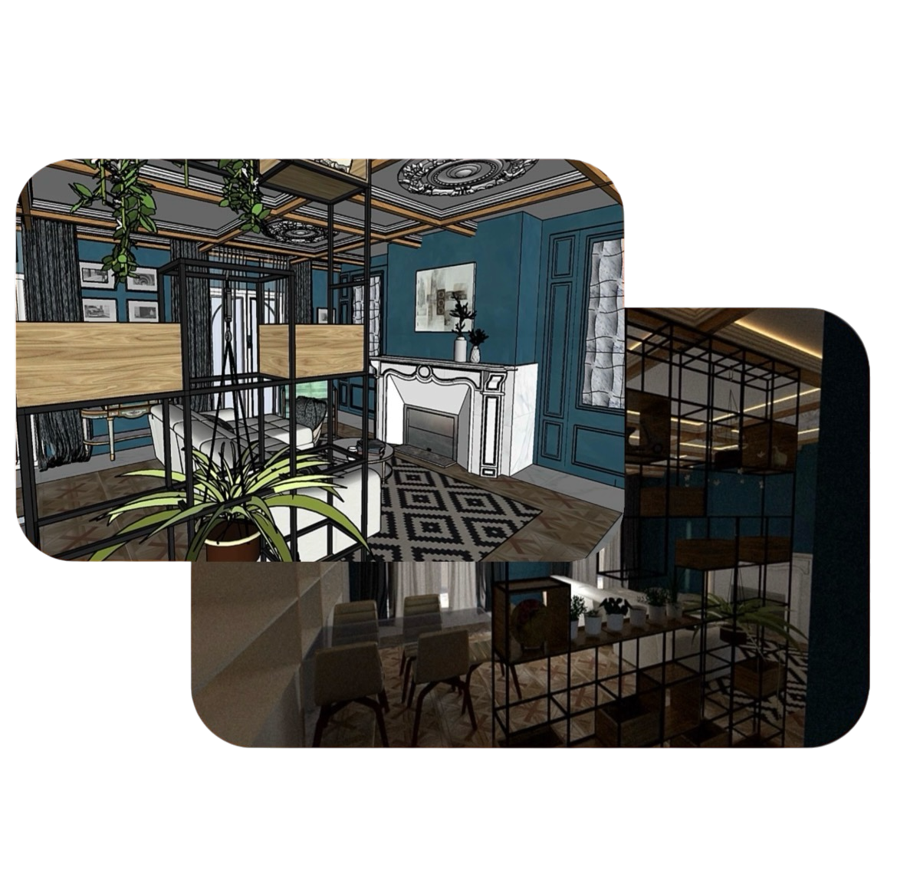

A Propos De Nous
R&R Conception est une entreprise spécialisée dans la création de solutions sur mesure. Nous allions design, innovation et qualité pour répondre aux besoins de nos clients
Concepteur de bâtiments expérimenté et autonome avec une expérience avérée dans la gestion de projets privés, la conception et la supervision des relations avec les clients
